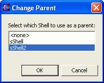

You can use the visual editor to change the parent of an SWT Shell,
to quickly create dialogs and other shells from an SWT application.
In order to change the parent of an SWT Shell, your visual class must
include another Shell.
When you drop a new Shell on an SWT visual class, by default the
Shell is created without a parent:
sShell1 = new Shell();
If
a Shell specified a parent, it would look like this:
sShell1 = new Shell(sShell);
The
visual editor provides a dialog to help you specify or change the parent of
an SWT Shell.
- In the Design view, right-click the Shell whose parent you want
to change, and select Change Parent.
- In the Change Parent window, select the parent Shell that you want
to use.

- Click OK.
The Java code will be updated to reflect the new parent. The following
code snippet shows an example:
sShell1 = new Shell(sShell2);